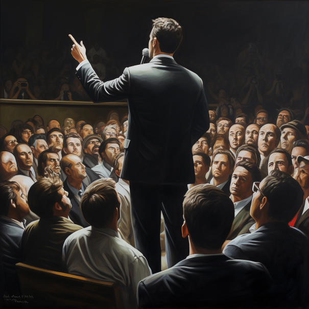
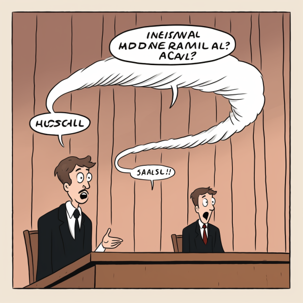

List of Expressions
-
Punch Line

In business, a "punch line" refers to a memorable phrase or sentence that captures the essence of a product, service, or the brand itself. It is primarily used in marketing and advertising, aiming to drive the target audience to a desired action such as making a purchase or remembering the brand. The punch line should summarize the brand's value proposition, unique selling point, or the experience it offers. It is often witty, clever, and emotionally resonant, allowing the brand to stand out among competitors. For example:
Nike: "Just Do It"
Apple: "Think Different"
McDonald's: "I'm Lovin' It"
MasterCard: "There are some things money can't buy. For everything else, there's MasterCard."
These punch lines are effective because they evoke an emotional response and reflect the core values and identity of the brand. -
Heartbreaker

"Heartbreaker" is an expression used in English with a negative connotation. This term is used to describe someone who hurts or emotionally damages another person. It is primarily used for a person who acts unfairly or ignores and betrays the feelings of the other party.
For example, if one partner in a romantic relationship ignores and behaves in a way that emotionally hurts the other partner, that person can be called a "heartbreaker". Additionally, this term can also be used among friends or family to refer to someone who hurts the feelings of others.
"Heartbreaker" is a critical term used to criticize a person, so it should be used carefully. Depending on the situation, using it irresponsibly can hurt or emotionally damage others, so caution should be exercised in using language that respects and considers each other."
-
I got your back

'I got your back' means 'I will help you' or 'I will support and back you up'.
Just as 'back' means 'the rear side of the body', 'having someone's back' means standing on their side, supporting and assisting them.
For example, when a colleague is at risk of being fired, you can express 'I got your back' to say don't worry, I will help and support you.
When a friend is doing something difficult, you can say 'I got your back' to convey that you are here to help them.
'I got your back' is an expression that conveys trust and support for colleagues or friends. It is useful when expressing that you value and protect each other.
Square Away

"Square away" is a colloquial expression used in English, meaning to finish up or prepare something. This expression is used with a focus on processing and completing tasks, often referring to refining and finalizing assignments, schedules, problems, or preparations.
For example, if someone has been assigned an important project and the deadline for completion is approaching, they might say, "I need to square away the project before the deadline." This means finishing the project, handling all the details, and completing it by the deadline.
As another example, if you're going on a trip with friends, you might say, "Let's square away everything before we leave for the trip," meaning to finalize all preparations and bookings before the trip.
This colloquial expression is commonly heard in everyday conversation and is used to effectively handle and complete important tasks or plans."
Call Out

Call out refers to numbers or letters used to point to specific parts in drawings or documents.
For example, in a mechanical drawing, instead of writing the names of each part, sometimes serial numbers like 1, 2, 3 are assigned to each part.
These numbers or letters in a drawing that point to specific parts or sections are called 'call outs'.
Another example is in a catalog document, where numbers like 1, 2, 3 are assigned to product photos being introduced, and explanations for them are provided separately. This can also be considered a call out.
Using call outs allows for faster and more accurate referencing of items mentioned in drawings or documents.
During a meeting, Frank, the project manager, and Matthias, the project partner, mentioned it a few times.
Malleable
"Malleable" is an adjective used in English, meaning "easily flattened" or "readily having its shape changed". This expression is primarily used for physical materials but can also be used metaphorically.
Physically, a "malleable" material can be relatively easily flattened or have its shape changed under pressure or external force. The most common example is metal. Metals are known to be easily flattened materials, often heated for welding work or to make them slippery.
Metaphorically, "malleable" can also be applied to concepts, plans, or a person's personality. For example, a "malleable mind" describes a person who is open to new ideas, flexible, and open to new perspectives. Also, a "malleable plan" means a plan that can be easily modified or adjusted.
In this way, "malleable" is used both physically and metaphorically, often used as a term emphasizing the flexibility and modifiability of materials, ideas, plans, people, etc., to be easily transformed depending on the situation.
logjam
The word "logjam" is typically used in two situations:
Literal meaning: First, "logjam" literally means a phenomenon where logs are entangled or stacked in a river or stream, blocking movement. This phenomenon disrupts the flow of water and can sometimes cause flooding.
Metaphorical meaning: "Logjam" is also a metaphorical expression used to describe a situation where a project, process, or discussion is stuck and unable to progress. This can happen for various reasons, such as conflicts, disagreements, lack of resources, or inability to make decisions.
For example, "The meeting is stuck in a logjam, unable to reach a decision" describes a situation where the discussion is blocked and a decision cannot be made.
Buy Off

Let me briefly explain the word buy-off. Buy-off means to approve or confirm. For example, Person A proposed something to Person B.
After reviewing the proposal, if Person B likes it and officially approves it, it is called a buy-off. In a concrete situation, a new product design draft is created in a company.
If the quality control team reviews this design draft, confirms there are no issues, and signs off on it, this is called a buy-off.
If I hear a friend's proposal to purchase a new product and I also agree it's good, I can say I buy-off on your proposal.
Thus, buy-off means receiving someone's opinion or proposal, reviewing it, and then confirming or approving it.
Pick On Someone

"Pick on someone" means to point out or criticize someone. This expression is commonly used to describe a situation where someone on the stronger side unreasonably criticizes or bullies someone on the weaker or more vulnerable side.
This expression is often used among children, frequently heard to describe a situation where stronger and more capable children bully or criticize weaker and more sensitive children. However, these situations can also occur in interactions among adults.
"Pick on someone" implies an intention of the individual on the strong side to attack or harass the individual on the weak side. This is socially undesirable and goes against the principle of respect for treating others with consideration.
For example, if a student frequently criticizes or bullies another student at school, that student can be seen as "picking on someone". This behavior is considered school violence or bullying, and educational institutions strive to prevent and stop such actions.
Therefore, "pick on someone" is a negative behavior that goes against respecting and considering others, emphasizing the need for positive interactions that respect and understand each other.
Cadence

The client, Mustafa, asked the project manager, Matthias, from the partner company the following: Are you okay with the meeting cadence?
When I looked up the meaning, 'Ca CopyClaude does not have the ability to run the code it generates yet.J계속dence' meant a consistent rhythm or pace. In the case of meetings, 'meeting cadence' can refer to how often meetings are held, the order or schedule of meetings.
So, "Are you okay with the meeting cadence?" is asking:
Are you satisfied with the current frequency of meetings (e.g., meeting once a week) Is the meeting schedule or order suitable for me (e.g., regular meetings on Monday mornings) Is the meeting cycle or pattern appropriate (e.g., holding an all-hands meeting every quarter)
In other words, it is asking if the rhythm or pattern of meetings is acceptable or comfortable for me.
Flesh Out

"Flesh out" is a colloquial expression used in English meaning "to explain in detail" or "to plan in detail". This expression is used to cover something in more detail or to provide specific explanations or to complete a plan in detail.
"Flesh out" is often misunderstood as "flash out", but the correct expression is "flesh out".
For example, when starting a project, you may have an idea but not yet a specific plan. In this case, it is important to "flesh out" the idea further with team members through meetings to set specific goals and plans. This is a necessary step for successfully carrying out the project.
As another example, when a writer begins writing a new novel, the protagonist and details of the story may still be incomplete. Therefore, the writer "fleshes out" the characters more to describe their personality, goals, emotions, etc. in detail, making the story richer.
"Flesh out" is an expression that emphasizes the process of covering anything in more detail and completing it, used to provide more abundant and specific information or to complete a plan.
I am not gonna to sweat it.
"I am not gonna to sweat it" is a colloquial expression used in English, commonly heard in everyday conversation.
This expression has a similar meaning to 'I won't worry about it', 'I won't be too concerned about it', 'I won't worry too much about it', etc.
'Sweating' literally means perspiring due to physical effort or tension, but here it is used metaphorically to express becoming emotionally unstable due to emotional burden, worry, anxiety, etc.
Therefore, "I am not gonna to sweat it" is mainly used to indicate that one will not be overly worried or burdened about oneself or the situation, expressing the will to take the situation more comfortably.
This expression is used in everyday conversation to stabilize one's mind or maintain a positive mindset and can be used from simple situations to making important decisions.
For example, if a friend says, "I am not gonna to sweat it. I'll do my best and see what happens." before an exam, that friend is expressing confidence that they will not worry too much and will do their best.
Having such a positive mindset can help stabilize oneself and lead to better results.
Cobble Together
'cobble together' means 'to assemble various things and make something clumsily'.
'cobble' usually refers to making roads or buildings using small, irregular stones.
Based on this, 'cobble together' means to use various miscellaneous materials or information to clumsily complete something.
For example, I cobbled together information from multiple sources to prepare for the exam. Due to a lack of budget, we cobbled together low-cost parts instead of high-quality ones.
I cobbled together available information to write the report due to insufficient data.
In this way, 'cobble together' means gathering various elements to create a clumsy result.
Balm

"Balm" is generally a product applied to the skin, mainly used to soothe or protect the skin. Unlike creams or lotions, balms usually have a thicker texture and are typically made with waxes, oils, herbal extracts, etc.
Healing Balm: Healing balms contain ingredients that help soothe and heal the skin. They are commonly used to treat or alleviate skin issues such as wounds, burns, rashes, etc.
Lip Balm: Lip balms are used to prevent and heal dryness and cracking of the lips. Lip balms may include moisturizing ingredients along with added scents or colors.
Muscle Balm: Muscle balms contain ingredients that help relieve muscle pain and tension. They are commonly used to alleviate muscle pain and inflammation after sports activities.
Essential Oil Balm: Essential oil balms are used for aromatherapy purposes, and the scent of specific essential oils can have various effects such as relaxation, calmness, improved concentration, etc.
Moisturizing Balm: Moisturizing balms contain ingredients that help protect and moisturize the skin. They are especially ideal for dry skin.
Balms like Tiger Balm can fall into one or more of the above categories. For example, Tiger Balm can be classified as a muscle balm and has pain-relieving and anti-inflammatory effects. When using these balm products, it is important to always check the product label and follow the instructions for use."
Reconcile
"Reconcile" is a verb used in various contexts, mainly referring to the act of adjusting or harmonizing two different things or concepts. This term is primarily used to describe the process of resolving conflicts, differences, or contradictions to achieve harmony.
For example, "reconcile" can be used in the following situations:
- When two people with different opinions understand each other's views and find a consensus:
"We had different opinions on the project, but we managed to reconcile our ideas and come up with a collaborative solution."
- When adjusting incorrectly recorded bank transactions:
"I need to reconcile my bank statement with my transaction records to ensure there are no errors."
- When resolving internal conflicts about values or principles:
"He struggled to reconcile his desire for success with his belief in work-life balance."
- When resolving balance differences in accounting analysis:
"The accountant worked diligently to reconcile the discrepancies in the financial records."
- When adjusting personal conflicts or anger to find peace:
"After their argument, they took some time to cool off and then reconciled their differences."
Musical Chairs

Musical chairs is a game where players move around chairs to music and try to occupy a chair.
First, chairs are arranged with one less chair than the number of people who will sit on them.
Then, while the music plays, participants dance in a circle around the chairs.
When the music stops, participants must sit on the nearest chair. The person who fails to occupy a chair is eliminated.
The game continues to the next round with one chair removed in this way. The last remaining person becomes the final winner in this exciting game.
In business, 'musical chairs' is usually used metaphorically to refer to frequent personnel movements within an organization.
For example, recently, there has been musical chairs in our company, with too frequent personnel transfers between departments.
Many employees are playing musical chairs due to this business unit reorganization.
Subordinates are trying to avoid musical chairs due to constantly changing managers.
In this way, the situation where employees' positions frequently change within a company is also expressed as musical chairs.
It is a figurative term for high competition and changes in positions.
Caveat

Caveat means 'caution' or 'reservation'.
It is mainly used in contracts or legal documents to specify matters that require attention under certain conditions or situations.
For example, if a clause is included stating that this contract may be changed according to the agreement between the parties, it is adding a caveat that 'This contract is subject to change upon mutual agreement between parties'.
In other words, you can understand that a caveat presents a caution that 'there are exceptions to this content'.
When creating legal documents, it is good to clearly state caveats so as not to omit important matters.
In a nutshell, it is a word that means 'pay attention'.
My question is kind of rhetorical question.

A "rhetorical question" is a type of question that is used not to obtain an answer or information, but to emphasize an argument or to create an effect in a sentence.
When asking this type of question, the person asking already knows the answer and uses it as a rhetorical or persuasive means to engage the audience or stimulate thinking.
In this situation, the expression 'My question is kind of a rhetorical question.' is used by a superior to a subordinate and may be used not because an actual answer is wanted but simply to emphasize an argument or to force the acceptance of the superior's opinion.
Rathole

General meaning depending on context: First, "rathole" literally means a 'rat hole', which can be used to refer to a small, narrow space or hole.
Meaning in construction and oil industry: In construction sites or oil mines, "rathole" refers to a deep, narrow hole used to store drilling equipment.
Meaning in business and investment: In the context of business or investment, "rathole" is a figurative expression referring to a situation where money or resources are wasted.
For example, the expression "throwing money down a rathole" describes a situation where money is wasted without much profit.
Meaning in meetings or discussions: Also, "rathole" means a situation in a meeting or discussion where the topic significantly deviates, often progressing in an unproductive direction.
This is expressed as "going down a rathole", which means spending too much time on unnecessary details, deviating from the main topic. It is often used in this meaning.
A Little Goofy to Me

"A little goofy to me" is an informal English expression indicating that someone or something feels a bit silly or funny. This expression is mainly used with a positive connotation, often used in situations where one feels something is funny or peculiar without intending to harm or criticize the other person.
For example, if someone plays a silly prank or makes a cute mistake, people around them might say, "Oh, you're a little goofy!" to express that the person feels funny and cute. Here, "goofy" has the meaning of funny and eccentric, and "a little" adds the meaning of slightly.
This expression is used in a light atmosphere with other people and is frequently heard in situations where people can understand each other well and laugh together. As it is generally an expression used in close relationships, it is better to use it naturally when you are with close friends or family rather than using it alone to a stranger. "
Potato Quality
"Potato quality" is an informal expression used in English to describe the very low or poor quality of photos, videos, or other media content. This expression is mainly used to metaphorically express a state where an image or video is blurry and vague as if looking at a potato (potato), with low resolution and lack of clarity.
Image quality: When a friend shows photos taken on a trip, the photos are very blurry and low resolution, with hardly any details visible. In this case, another friend might jokingly say, "Wow, your photo is potato quality!"
Video quality: When watching a very old movie on an online video streaming service, the screen may be full of pixels and low resolution. In this case, the user might say, "This movie is interesting, but the video quality is like a potato!" to point out the low resolution of the video.
Webcam quality: During a video conference, the other person's webcam may show a very low resolution, making their face appear vague. In this situation, one of the participants might humorously criticize the situation by saying, "I can barely see you with this potato quality webcam!""
Gibber

'gibber' means 'to stammer meaningless words', and based on this, gibberish refers to confused speech or sentences.
For example, he was drunk and kept on with gibberish, out of his mind.
This report was difficult to read as its content was gibberish. That project turned into complete gibberish without a conductor.
In this way, 'gibberish' is used to mean meaningless and chaotic speech or content.
Personal Privilege
Let's assume that a meeting is in progress to discuss policies related to inflation. Participants are presenting various opinions and engaging in discussions on this matter. At this point, a participant requests "personal privilege".
The reason that participant is requesting "personal privilege" is because they are experiencing financial difficulties due to inflation.
CopyClaude does not have the ability to run the code it generates yet.J계속The participant explains that they need to handle a personal matter during the meeting.
As a result, they require time to temporarily leave the meeting or share their personal matter with other participants.
The organizer or facilitator of the meeting accepts and understands that participant's "personal privilege".
The meeting is temporarily paused, or the organizer responds sensitively to the participant's personal matter.
However, the organizer provides the time needed by the participant while maintaining the purpose and schedule of the meeting as much as possible.
In this way, the meeting is appropriately adjusted, and the participant can handle their personal matter and return to the meeting to participate in the discussion.
Throw Under The Bus

"Throw under the bus" is an English expression meaning to push someone alone to take responsibility in a difficult situation or to sacrifice them. This expression commonly refers to the act of shifting one's fault or failure to someone else, putting that person in an unfavorable situation or disadvantaging them.
For example, when a problem arises due to the mistake of one of the team members, if the boss "throws that team member under the bus", they may shift all responsibility to that team member and try not to take any responsibility themselves. This can be seen as an unethical behavior of sacrificing someone to protect one's own position.
This expression is mainly used in informal situations and is considered socially undesirable behavior. In situations that value cooperation and a fair attitude, it is rather desirable to solve problems and cooperate with colleagues to bring about better results.
Head Start
'a head start' means 'to have an early advantage'. It usually refers to a position or advantage one side has ahead of the other in a competitive situation.
For example, a student who started studying for the exam early has a head start in exam preparation compared to other students. The company that first launched a new product has a head start in market preemption compared to competitors.
Because he has been exercising for several years, he has a head start over other athletes in the marathon competition.
In this way, 'a head start' is often used when talking about preemptive actions or situations to gain a competitive edge.
In a nutshell, you can understand it as meaning an advantage of 'going ahead'.
A term used on the internet, referring to behavior that intentionally annoys or provokes anger in others. These behaviors are often aimed at making derogatory comments, subtle provocations, or deceiving someone.
From a business perspective, trolling often occurs on social media, community forums, comment sections, etc., and such behavior can negatively impact a brand's online image or customer experience. Therefore, many companies set community guidelines to manage such behavior and, if necessary, employ community managers to enforce them.